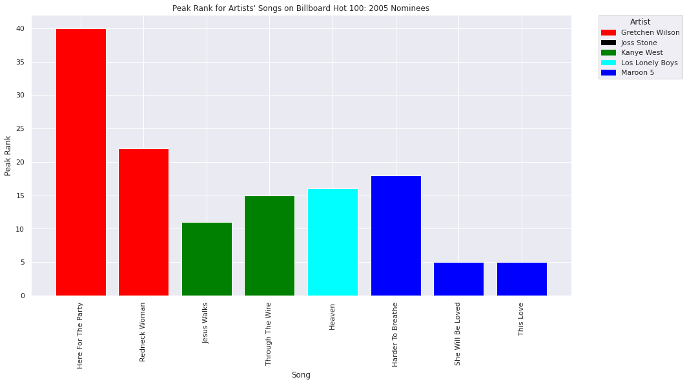
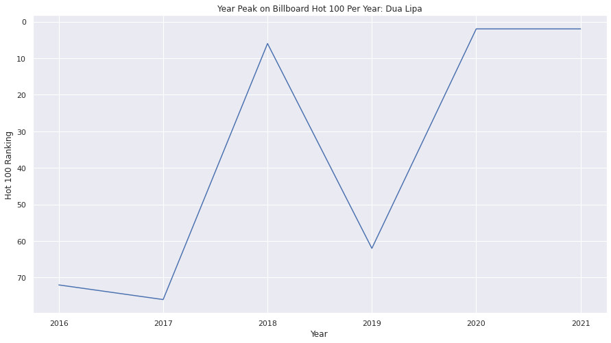

Grammy's Best New Artist: An Analysis
By: Bhavi Mistry, Diane Sun, and Eyerusalem Wondwossen
For many artists, winning, or simply being nominated, for a Grammy Award is a incredible honor. For artists new to the industry, the Best New Artist award allows them to feel that their music is being appreciated and seen. The eligibility for the award is as follows:
"To be eligible in the category of Best New Artist, the artist, duo, or group: must have released a minimum of five tracks or one album..., may not have entered into this category more than three times..., and must have achieved a breakthrough into the public consciousness and impacted the musical landscape during the eligibility period."
And the voting for the award is as follows:
"Members of the National Academy of Recording Arts and Sciences nominate their choices for the best new artist. A list of the top twenty artists is given to the Nominations Review Committee, a specially selected group of anonymous members, who initially selected the top five artists to gain a nomination in the category in a special ballot... The rest of the members then vote on a winner from the final nominees."
As with many other awards, there are always people who believe that the award went to the wrong person. Many of these arguments claim that the artist who had the most success on the charts should be the one to receive the award. In this tutorial, we will be analyzing the nominees of the Grammy's Best New Artist award to evaluate if those claims have any backing by exploring their chart performance on the Billboard Hot 100, a standard charting record that ranks songs based on streams, physical and digital sales, and radio play in the U.S. In addition, we will see if some of the winners were affected by the 'Best New Artist Curse.'
Throughout this tutorial, we will be using different python libraries like BeautifulSoup, pandas, numpy, matplotlib, and more, to scrape, wrangle, and analyze the data.
# importing necessary libraries and utilities
import pandas as pd
import numpy as np
import seaborn as sns
from bs4 import BeautifulSoup
import requests
from pandas._libs import index
import datetime
import re
import matplotlib.pyplot as plt
import statsmodels.api as sm
from sklearn.linear_model import LinearRegression
from sklearn import metrics
from sklearn.metrics import r2_score
import scipy
from scipy.optimize import curve_fit
from scipy.optimize import differential_evolution
import warnings
import statsmodels.api as sm
from google.colab import drive
drive.mount('/content/drive')/usr/local/lib/python3.7/dist-packages/statsmodels/tools/_testing.py:19: FutureWarning: pandas.util.testing is deprecated. Use the functions in the public API at pandas.testing instead.
import pandas.util.testing as tm
Mounted at /content/drive
To achieve our goal, we will be using two sources of data. The first dataset contains historical data on winners and nominees for Grammy's Best New Artist category. We will be retrieving this data from the Total Music Awards: Grammy's Best New Artist Winners Archive. We will use webscraping techniques and Python packages and libraries like requests, BeautifulSoup and pandas retrieve the data.
The archive lists winners and nominees for each year are like so:
<p>
<strong>2021: Megan Thee Stallion</strong>
<br>
Ingrid Andress
<br>
Phoebe Bridgers
<br>
Chika
<br>
Noah Cyrus
<br>
D Smoke
<br>
Doja Cat
<br>
Kaytranada
</p>Each year's data is contained in its own <p> (paragraph) tag, with the year and winner appearing before the nominees, so we need to find all <p> tags in the page to retrieve each year's data, and then separate each name using the <br> (linebreak) and \n (newline) tags. This will allow us to form a dataframe for each year, which we can then concatenate with the other years to get all of our data in one place. The winners and nominees that we will be focusing on are from 2000-2021.
# extract text from webpage
page = requests.get('https://totalmusicawards.com/grammy-awards/best-new-artist-winners-nominees-archive/')
text = page.text
soup = BeautifulSoup(text, 'html.parser')
# retrieve the award data located in the <p> tags
p = soup.find_all("p")
awards = pd.DataFrame()
# use the range 2-23 which contains BNA data from 2000 to 2021
for i in range(2, 24):
# separate the winners and nominees by the line breaks
lst = p[i].get_text().split('<br/>')[0].split('\n')
# make a dataframe of the current year's data
df = pd.DataFrame(lst)
# winner of the award has 'Year: ' preceding their name, so grab to year to insert into Year column
year = df.iloc[0,0][:4]
df['year'] = year
# remove the 'Year: ' from the winner's entry
df.iloc[0,0] = df.iloc[0,0][6:]
df['winner'] = False
# the winner was listed first, so make the first element of the df true
df.loc[0, 'winner'] = True
# rename column and change order
df = df.rename(columns={df.columns[0]: 'nominees'})
df = df[['year', 'nominees', 'winner']]
awards = pd.concat([awards, df])
# fix indeces
awards = awards.reset_index()
awards = awards.drop(['index'], axis = 1)
awards| year | nominees | winner | |
|---|---|---|---|
| 0 | 2021 | Megan Thee Stallion | True |
| 1 | 2021 | Ingrid Andress | False |
| 2 | 2021 | Phoebe Bridgers | False |
| 3 | 2021 | Chika | False |
| 4 | 2021 | Noah Cyrus | False |
| ... | ... | ... | ... |
| 114 | 2000 | Christina Aguilera | True |
| 115 | 2000 | Macy Gray | False |
| 116 | 2000 | Kid Rock | False |
| 117 | 2000 | Britney Spears | False |
| 118 | 2000 | Susan Tedeschi | False |
119 rows × 3 columns
Next, we'll extract the winners from our dataframe to use when we just want to explore the winners' data.
# grab the winners from the winner/nominee data
bnaWinners = awards[awards['winner'] == True]
bnaWinners = bnaWinners.drop(['winner'], axis = 1)
bnaWinners = bnaWinners.rename(columns={bnaWinners.columns[1]: 'winner'})
bnaWinners| year | winner | |
|---|---|---|
| 0 | 2021 | Megan Thee Stallion |
| 8 | 2020 | Billie Eilish |
| 16 | 2019 | Dua Lipa |
| 24 | 2018 | Alessia Cara |
| 29 | 2017 | Chance the Rapper |
| 34 | 2016 | Meghan Trainor |
| 39 | 2015 | Sam Smith |
| 44 | 2014 | Macklemore & Ryan Lewis |
| 49 | 2013 | fun. |
| 54 | 2012 | Bon Iver |
| 59 | 2011 | Esperanza Spalding |
| 64 | 2010 | Zac Brown Band |
| 69 | 2009 | Adele |
| 74 | 2008 | Amy Winehouse |
| 79 | 2007 | Carrie Underwood |
| 84 | 2006 | John Legend |
| 89 | 2005 | Maroon 5 |
| 94 | 2004 | Evanescence |
| 99 | 2003 | Norah Jones |
| 104 | 2002 | Alicia Keys |
| 109 | 2001 | Shelby Lynne |
| 114 | 2000 | Christina Aguilera |
The second dataset was retrieved from a Billboard Hot 100 CSV that contains weekly Billboard Hot 100 data from August 4, 1958 to November 6, 2021. The data includes the top 100 per week, the respective artist of each song and the song's ranking in the previous week, it's peak rank and it's total weeks on the chart up till then. Since we are focusing on the Best New Artist winners from 2000-present, we will be reducing this data to the years 1998-2021. We keep 1998 and 1999's data because the elegibilty period for the 2000 Grammys begins in 1998.
# read file into dataframe, and clean data
charts = pd.read_csv("/content/drive/My Drive/320_Spotify_FP/charts.csv")
charts = charts.rename(columns={"last-week": "lastWeek", "peak-rank":"peakRank", "weeks-on-board": "weeksOnBoard"})
charts = charts.loc[(charts['date'] >= '1998-01-01') & (charts['date'] <= '2022-01-01')] # only data we need
charts| date | rank | song | artist | lastWeek | peakRank | weeksOnBoard | |
|---|---|---|---|---|---|---|---|
| 0 | 2021-11-06 | 1 | Easy On Me | Adele | 1.0 | 1 | 3 |
| 1 | 2021-11-06 | 2 | Stay | The Kid LAROI & Justin Bieber | 2.0 | 1 | 16 |
| 2 | 2021-11-06 | 3 | Industry Baby | Lil Nas X & Jack Harlow | 3.0 | 1 | 14 |
| 3 | 2021-11-06 | 4 | Fancy Like | Walker Hayes | 4.0 | 3 | 19 |
| 4 | 2021-11-06 | 5 | Bad Habits | Ed Sheeran | 5.0 | 2 | 18 |
| ... | ... | ... | ... | ... | ... | ... | ... |
| 124495 | 1998-01-03 | 96 | Smack My Bitch Up | The Prodigy | 90.0 | 90 | 3 |
| 124496 | 1998-01-03 | 97 | Don't Go | Le Click Featuring Kayo | 94.0 | 62 | 15 |
| 124497 | 1998-01-03 | 98 | Up & Down | Billy Lawrence | 99.0 | 92 | 4 |
| 124498 | 1998-01-03 | 99 | Doin' Time | Sublime | 96.0 | 96 | 3 |
| 124499 | 1998-01-03 | 100 | Brian Wilson | Barenaked Ladies | 100.0 | 92 | 7 |
124500 rows × 7 columns
In this section, we will use the fans' performance metric of high chart success to explore the accuracy of the Best New Artist award outcome based on the nominees' Billboard Hot 100 success. In addition, we want to examine the 'Best New Artist Curse' and see how the careers of some winners continued after they won.
First, we will be examing the success of the nominees vs. the winner in specific years in the eligibility period of that year's award.
This section focuses on the 2005 Best New Artist. The winner was Maroon 5, who beat out Gretchen Wilson, Joss Stone, Kanye West, and Los Lonely Boys. The eligibility for these Grammy's was October 1, 2003 to September 30, 2004. Using the Billboard Hot 100 data, we will be comparing several statistics.
First we will be looking at the total weeks on the Billboard Hot 100 charts in the eligibility period for each of the artists.
bna2005 = charts.loc[(charts['date'] >= '2003-10-01') & (charts['date'] <= '2004-09-30')] # reduce to eligibility period
bna2005 = bna2005.loc[bna2005['artist'].isin(['Maroon 5','Los Lonely Boys','Joss Stone','Kanye West','Gretchen Wilson'])] # only get nominees data
weeks = bna2005.groupby('song', as_index=False).max() # get each of their songs
weeks = weeks.groupby('artist', as_index=False).sum() # sum to get total weeksOnBoard for all their songs
weeks = weeks.drop(columns=['lastWeek', 'peakRank', 'rank']) # remove irrelevant columns
weeks.loc[len(weeks.index)] = ['Joss Stone', 0] # add placeholder, since she had no charting songs
weeks.set_index('artist',inplace=True)
weeks = weeks.sort_values(by ='weeksOnBoard')
weeks| weeksOnBoard | |
|---|---|
| artist | |
| Joss Stone | 0 |
| Los Lonely Boys | 20 |
| Gretchen Wilson | 28 |
| Kanye West | 42 |
| Maroon 5 | 65 |
sns.set(rc = {'figure.figsize':(15,8)}) # chart size
weeks['weeksOnBoard'].plot(kind="barh") # horizontal bar chart
plt.title("Total Weeks on Billboard Hot 100: 2005 Nominees")
plt.ylabel("Artist")
plt.xlabel("Total Weeks")Text(0.5, 0, 'Total Weeks')The first statistic we will be looking at is the total weeks each artist was on the Billboard Hot 100 for all of their songs combined in the eligibility period. The first thing that stands out from this is that Joss Stone spent zero weeks on the chart. It's interesting that a nominee for Best New Artist didn't even have one song in the eligibility period to chart. Another point of interest is that is Maroon 5, the winner, was on the charts the longest, out of all the nominees. To better understanding this statistic, it's important to look at the total songs each artist had that charted.
num = bna2005.groupby('song', as_index=False).min() # sort by song
num = num.drop(columns=['lastWeek', 'weeksOnBoard', 'rank']) # irrelevant columns
num = num.groupby('artist').size() # number of songs to chart
# adding placeholder since she had no charting songs
s = pd.Series([0])
index = ['Joss Stone']
s.index = index
num = num.append(s)
num = num.sort_index()
# plot data
plt.title("Total Songs to Chart on Billboard Hot 100: 2005 Nominees")
plt.xlabel("Artist")
plt.ylabel("Total Songs")
plt.bar(num.index, num.values)<BarContainer object of 5 artists>From this, we can see that Maroon 5 had the most songs to chart, which is probably part of the reason why they spent the most weeks on the Hot 100. In addition, we could see that Kanye West spent about 66% of Maroon 5's total weeks on the charts, and he had 66% of Maroon 5's total songs to chart. So it seems that although Maroon 5 had more songs to chart, Kanye's songs might have done just as well. To see if this is true, we will look at the peak rank's of all the artists' songs in this period.
peak = bna2005.groupby('song', as_index=False).min() # get peak rank of each song
peak = peak.drop(columns=['lastWeek', 'weeksOnBoard', 'rank'])
peak = peak.sort_values(by ='artist')
peak| song | date | artist | peakRank | |
|---|---|---|---|---|
| 2 | Here For The Party | 2004-08-07 | Gretchen Wilson | 40 |
| 4 | Redneck Woman | 2004-04-10 | Gretchen Wilson | 22 |
| 3 | Jesus Walks | 2004-05-08 | Kanye West | 11 |
| 7 | Through The Wire | 2003-11-29 | Kanye West | 15 |
| 1 | Heaven | 2004-05-15 | Los Lonely Boys | 16 |
| 0 | Harder To Breathe | 2003-10-04 | Maroon 5 | 18 |
| 5 | She Will Be Loved | 2004-07-24 | Maroon 5 | 5 |
| 6 | This Love | 2004-02-14 | Maroon 5 | 5 |
# get data
x = peak['song']
y = peak['peakRank']
x_pos = np.arange(len(x))
# add specific color for each artist
plt.bar(x_pos, y, color=['red','red', 'green', 'green', 'cyan','blue', 'blue', 'blue'])
plt.xticks(x_pos, x)
# add legend
colors = {'Gretchen Wilson':'red', 'Joss Stone':'black','Kanye West':'green', 'Los Lonely Boys':'cyan', 'Maroon 5':'blue'}
labels = list(colors.keys())
handles = [plt.Rectangle((0,0),1,1, color=colors[label]) for label in labels]
plt.legend(handles, labels, bbox_to_anchor=(1.05, 1), loc='upper left', borderaxespad=0, title="Artist", ncol=1)
# title and labels
plt.title("Peak Rank for Artists' Songs on Billboard Hot 100: 2005 Nominees")
plt.xlabel("Song")
plt.ylabel("Peak Rank")
plt.xticks(rotation = 90) # adjust x labels
plt.show()
From these results, we can see that Maroon 5 had two songs to peak in the top 10, while no other nominee even reached the top 10 with one song. In addition, Kanye West was the only other nominee to reach the top 15.
Although the success of an artist's music on the Billboard Hot 100 isn't the only factor that the voters take into account when choosing the winners, it seems that in 2005, the 'correct' winner was chosen for Best New Artist.
This section focuses on the 2018 Best New Artist. The winner was Alessia Cara, who beat out Khalid, Lil Uzi Vert, Julia Michaels, and SZA. The eligibility for these Grammy's was October 1, 2016 to September 30, 2017. Using the Billboard Hot 100 data, we will be comparing several statistics.
First we will be looking at the total combined weeks on the Billboard Hot 100 charts in the eligibility period for all the artists.
bna2018 = charts.loc[(charts['date'] >= '2016-10-01') & (charts['date'] <= '2017-09-30')] # reduce to eligibility period
bna2018 = bna2018.loc[bna2018['artist'].isin(['Alessia Cara','Khalid','Lil Uzi Vert','Julia Michaels','SZA'])] # only get nominees data
weeks = bna2018.groupby('song', as_index=False).max() # get each of their songs
weeks = weeks.groupby('artist').sum() # sum to get total weeksOnBoard for all their songs
weeks = weeks.sort_values(by ='weeksOnBoard')
weeks = weeks.drop(columns=['lastWeek', 'peakRank', 'rank']) # remove irrelevant columns
weeks| weeksOnBoard | |
|---|---|
| artist | |
| SZA | 7 |
| Julia Michaels | 29 |
| Khalid | 45 |
| Alessia Cara | 62 |
| Lil Uzi Vert | 88 |
weeks['weeksOnBoard'].plot(kind="barh")
plt.title("Total Weeks on Billboard Hot 100: 2018 Nominees")
plt.ylabel("Artist")
plt.xlabel("Total Weeks")Text(0.5, 0, 'Total Weeks')Based on this statistic alone, one might think that Lil Uzi Vert should have won the award over Alessia Cara. However, it may be too early to jump to that conclusion. We should first look at the number of songs that each artist had chart during this time.
num = bna2018.groupby('song', as_index=False).min()
num = num.drop(columns=['lastWeek', 'weeksOnBoard', 'rank']) # irrelevant columns
num = num.groupby('artist').size() # number of songs to chart
plt.title("Total Songs to Chart on Billboard Hot 100: 2018 Nominees")
plt.xlabel("Artist")
plt.ylabel("Total Songs")
plt.bar(num.index, num.values)<BarContainer object of 5 artists>Based on these results, we can see that Lil Uzi Vert had significantly more songs to chart than any other nominee. This explains why he had the highest number of total weeks on the board. However, it is interesting to see that Alessia's total weeks is about 70% of Lil Uzi Vert's but her songs to chart were only 20% of Lil Uzi Vert's. This might mean that although she had fewer songs to chart, they might have been more successful. To see this, we can compare the peak rank's of all of the nominees.
peak = bna2018.groupby('song', as_index=False).min() # get peak rank of each song
peak = peak.drop(columns=['lastWeek', 'weeksOnBoard', 'rank'])
peak = peak.sort_values(by ='artist')
peak| song | date | artist | peakRank | |
|---|---|---|---|---|
| 3 | How Far I'll Go | 2016-12-17 | Alessia Cara | 56 |
| 9 | Scars To Your Beautiful | 2016-10-01 | Alessia Cara | 8 |
| 4 | Issues | 2017-02-11 | Julia Michaels | 11 |
| 5 | Location | 2017-01-28 | Khalid | 16 |
| 15 | Young Dumb & Broke | 2017-08-05 | Khalid | 26 |
| 0 | 444+222 | 2017-09-16 | Lil Uzi Vert | 60 |
| 1 | Dark Queen | 2017-09-16 | Lil Uzi Vert | 91 |
| 2 | For Real | 2017-09-16 | Lil Uzi Vert | 82 |
| 6 | Money Longer | 2016-10-01 | Lil Uzi Vert | 54 |
| 7 | No Sleep Leak | 2017-09-16 | Lil Uzi Vert | 90 |
| 8 | Sauce It Up | 2017-09-16 | Lil Uzi Vert | 49 |
| 11 | Two | 2017-09-16 | Lil Uzi Vert | 80 |
| 12 | X | 2017-09-16 | Lil Uzi Vert | 81 |
| 13 | XO TOUR Llif3 | 2017-04-15 | Lil Uzi Vert | 7 |
| 14 | You Was Right | 2016-10-01 | Lil Uzi Vert | 40 |
| 10 | The Weekend | 2017-08-19 | SZA | 54 |
# get data
x = peak['song']
y = peak['peakRank']
x_pos = np.arange(len(x))
# add specific color for each artist
plt.bar(x_pos, y, color=['red','red', 'black','green', 'green', 'blue', 'blue',
'blue','blue','blue','blue','blue','blue','blue','blue', 'cyan'])
plt.xticks(x_pos, x)
# add legend
colors = {'Alessia Cara':'red', 'Julia Michaels':'black', 'Khalid':'green', 'Lil Uzi Vert':'blue', 'SZA':'cyan'}
labels = list(colors.keys())
handles = [plt.Rectangle((0,0),1,1, color=colors[label]) for label in labels]
plt.legend(handles, labels, bbox_to_anchor=(1.05, 1), loc='upper left', borderaxespad=0, title="Artist", ncol=1)
# title and labels
plt.title("Peak Rank for Artists' Songs on Billboard Hot 100: 2018 Nominees")
plt.xlabel("Song")
plt.ylabel("Peak Rank")
plt.xticks(rotation = 90) # adjust x labels
plt.show()Although Lil Uzi Vert did have more songs to chart than any other nominee, only one of his songs ever reached the top 20. Khalid, Julia Michaels, and Alessia Cara also had songs to reach the top 20. However, Lil Uzi Vert did have the highest peak at 7, with Alessia Cara just behind him at 8 and Julia Michaels and Khalid just a few beind with 11 and 16, respectively.
Based on all of these results, some people may think that Lil Uzi Vert deserved to win the award over Alessia Cara. However, to the voters, it may be more than their songs' success that affects their vote. They could also take into account the impact they and their music have on people. Unfortunately, that is hard to quantify into simple data. Although Lil Uzi Vert did have a lot of success in that period, Alessia also did, so it is hard to say who really 'deserved' to win.
Conclusion
Based on the two different years we have observed, we know that sometimes the better charting artist in the eligibility period wins and sometimes they don't. Although we used Billboard Hot 100 data to compare the nominees, it is important to mention that the success of an artist is not just solely based on their music, but also the impact they have on their generation and the culture. So it will never be easy to determine which artist truly 'deserves' to win the Best New Artist Grammy award.
Before we move on to our hypothesis testing, let's take a quick break to explore the idea of the 'Best New Artist Curse' for fun!
Although winning a Grammy award is a great honor for many artists, some may not be very happy to the win the Best New Artist award. Unfortunately, "The Best New Artist award has a reputation for being given to artists whose music industry success ends up being short-lived; it is sometimes asserted, with varying degrees of sincerity, that the award itself brings a curse." So although some may feel grateful to win the award, they might also feel anxious about where their career is headed. In this next section, we will be analyzing the careers of some winners following their win and deciding if they were affected by the curse. To analyze their careers, we will be using the success of their songs on Billboard's Hot 100 chart.
First, we will be looking at the 2009 Best New Artist winner Adele, so let's get all of her songs that have charted.
adele = charts[charts['artist'].str.contains("Adele")] # get all adele data
adele = adele.loc[(adele['rank'] == adele['peakRank'])] # get highest rank of song
adele = adele.groupby('song').agg({'peakRank':'min', 'date':'max'}).reset_index() # gets the date of peak rank (latest, if multiple weeks at peak)
adele['year'] = pd.DatetimeIndex(adele['date']).year
adele| song | peakRank | date | year | |
|---|---|---|---|---|
| 0 | All I Ask | 77 | 2016-03-05 | 2016 |
| 1 | Chasing Pavements | 21 | 2009-02-28 | 2009 |
| 2 | Easy On Me | 1 | 2021-11-06 | 2021 |
| 3 | Hello | 1 | 2016-01-16 | 2016 |
| 4 | Remedy | 87 | 2015-12-12 | 2015 |
| 5 | Rolling In The Deep | 1 | 2011-07-02 | 2011 |
| 6 | Rumour Has It | 16 | 2012-05-26 | 2012 |
| 7 | Send My Love (To Your New Lover) | 8 | 2016-09-24 | 2016 |
| 8 | Set Fire To The Rain | 1 | 2012-02-11 | 2012 |
| 9 | Skyfall | 8 | 2012-10-20 | 2012 |
| 10 | Someone Like You | 1 | 2011-11-05 | 2011 |
| 11 | Turning Tables | 63 | 2011-05-07 | 2011 |
| 12 | Water Under The Bridge | 26 | 2017-02-11 | 2017 |
| 13 | When We Were Young | 14 | 2016-03-05 | 2016 |
From 2009 to 2021, she had had 14 songs to chart on Billboard Hot 100, so she averages about 1 song a year charting. Let's see how well her songs have charted over these years.
year = adele.groupby('year', as_index=False).min() # get year peak
# plot data
x = year['year']
y = year['peakRank']
plt.gca().invert_yaxis()
plt.title("Peak Rank on Billboard Hot 100 Per Year: Adele")
plt.xlabel('Year')
plt.ylabel('Hot 100 Ranking')
plt.plot(x, y)[<matplotlib.lines.Line2D at 0x7f8df3765890>]This plot shows us a lot about the success of Adele over the years. We can see that after her Grammy win in 2009, her chart peak increased and peaked at #1. However, after 2012, there was a steep decline until 2015. Following this low, she recovered and got back to the top of the chart, and she has had successful songs since. To better understand her career and these trends, it's important to look at the number of songs that have charted over that time.
# get data
x = adele['year']
y = adele['peakRank']
# plot data
plt.gca().invert_yaxis()
plt.title("Song Peaks on Billboard Hot 100 Per Year: Adele")
plt.xlabel('Year')
plt.ylabel('Hot 100 Ranking')
plt.plot(x, y, '.')[<matplotlib.lines.Line2D at 0x7f8df36ba610>]This chart gives us a better understanding of her career. We can see that she had several songs to chart in the years following her win but then went a few years without having any to chart. Then, she went back to having several songs to chart around 2016. Given that she released one album in 2011 and went four years before she dropped her next album in 2015, the gap in the data between 2012 and 2015 can simply be attributed to her not releasing new music. Based on these results, we can conclude that Adele was not affected by the Best New Artist curse.
Next, we will be looking at the 2010 Best New Artist winner, the Zac Brown Band. Let's look at all the songs from the band that have charted on the Hot 100.
zbb = charts[charts['artist'].str.contains("Zac Brown Band")] # get all zbb data
zbb = zbb.loc[(zbb['rank'] == zbb['peakRank'])] # get highest rank of song
zbb = zbb.groupby('song').agg({'peakRank':'min', 'date':'max'}).reset_index() # gets the date of peak rank (latest, if multiple weeks at peak)
zbb['year'] = pd.DatetimeIndex(zbb['date']).year
zbb| song | peakRank | date | year | |
|---|---|---|---|---|
| 0 | As She's Walking Away | 32 | 2010-11-27 | 2010 |
| 1 | Beautiful Drug | 52 | 2016-04-02 | 2016 |
| 2 | Castaway | 96 | 2016-09-03 | 2016 |
| 3 | Chicken Fried | 20 | 2009-01-03 | 2009 |
| 4 | Colder Weather | 29 | 2011-04-23 | 2011 |
| 5 | Free | 34 | 2010-08-14 | 2010 |
| 6 | Goodbye In Her Eyes | 48 | 2012-12-22 | 2012 |
| 7 | Highway 20 Ride | 40 | 2010-04-10 | 2010 |
| 8 | Homegrown | 35 | 2015-04-25 | 2015 |
| 9 | Jump Right In | 53 | 2013-07-27 | 2013 |
| 10 | Keep Me In Mind | 35 | 2011-12-24 | 2011 |
| 11 | Knee Deep | 18 | 2011-08-06 | 2011 |
| 12 | Loving You Easy | 40 | 2015-08-29 | 2015 |
| 13 | My Old Man | 68 | 2017-02-25 | 2017 |
| 14 | No Hurry | 50 | 2012-06-09 | 2012 |
| 15 | Same Boat | 53 | 2021-11-06 | 2021 |
| 16 | Sweet Annie | 47 | 2013-12-28 | 2013 |
| 17 | The Man Who Loves You The Most | 96 | 2020-06-27 | 2020 |
| 18 | The Wind | 70 | 2012-09-01 | 2012 |
| 19 | Toes | 25 | 2009-11-07 | 2009 |
| 20 | Whatever It Is | 26 | 2009-07-18 | 2009 |
Between the years 2009 and 2021, the Zac Brown Band has had 21 songs to chart which averages over a song a year. Now let's see how the band's songs have peaked over the years.
year = zbb.groupby('year', as_index=False).min() # get year peak
# plot data
x = year['year']
y = year['peakRank']
plt.gca().invert_yaxis()
plt.title("Peak Rank on Billboard Hot 100 Per Year: Zac Brown Band")
plt.xlabel('Year')
plt.ylabel('Hot 100 Ranking')
plt.plot(x, y)[<matplotlib.lines.Line2D at 0x7f8df364e810>]At first glance, we can see a general downward decline over the years. To better understand the results, we should also look at the number of songs to chart for the band over the years.
# get data
x = zbb['year']
y = zbb['peakRank']
# plot data
plt.gca().invert_yaxis()
plt.title("Song Peaks on Billboard Hot 100 Per Year: Zac Brown Band")
plt.xlabel('Year')
plt.ylabel('Hot 100 Ranking')
plt.plot(x, y, '.')[<matplotlib.lines.Line2D at 0x7f8df3678cd0>]Based on this chart, we can see that the number of the band's songs to chart on Billboard's Hot 100 has decreased over time. However, we can see that immediately following their win in 2010, they were very successful. Unfortunately, their success at that level did not continue. Regardless of their decline, it is important to note that even though their songs aren't reaching the top of the charts, they are still charting, which indicates some level of success. However, based on this data, we could conclude that the Zac Brown Band was affected by the Best New Artist curse.
Lastly, we will be looking at the 2019 Best New Artist winner Dua Lipa. Again, we will first be looking at all of her songs that have charted on Billboard's Hot 100.
d = charts[charts['artist'].str.contains("Dua Lipa")] # get all dua lipa data
d = d.loc[(d['rank'] == d['peakRank'])] # get highest rank of song
d = d.groupby('song').agg({'peakRank':'min', 'date':'max'}).reset_index() # gets the date of peak rank (latest, if multiple weeks at peak)
d['year'] = pd.DatetimeIndex(d['date']).year
d| song | peakRank | date | year | |
|---|---|---|---|---|
| 0 | Blow Your Mind (Mwah) | 72 | 2016-11-05 | 2016 |
| 1 | Break My Heart | 13 | 2020-08-29 | 2020 |
| 2 | Cold Heart (PNAU Remix) | 15 | 2021-11-06 | 2021 |
| 3 | Demeanor | 86 | 2021-07-31 | 2021 |
| 4 | Don't Start Now | 2 | 2020-03-21 | 2020 |
| 5 | Electricity | 62 | 2019-01-19 | 2019 |
| 6 | IDGAF | 49 | 2018-06-09 | 2018 |
| 7 | Kiss And Make Up | 93 | 2018-11-03 | 2018 |
| 8 | Levitating | 2 | 2021-05-22 | 2021 |
| 9 | Love Again | 41 | 2021-10-16 | 2021 |
| 10 | New Rules | 6 | 2018-02-17 | 2018 |
| 11 | One Kiss | 26 | 2018-07-28 | 2018 |
| 12 | Physical | 60 | 2020-02-15 | 2020 |
| 13 | Prisoner | 54 | 2020-12-05 | 2020 |
| 14 | Scared To Be Lonely | 76 | 2017-05-27 | 2017 |
| 15 | Un Dia (One Day) | 63 | 2020-08-08 | 2020 |
| 16 | We're Good | 31 | 2021-05-22 | 2021 |
We can see that she had 17 songs to chart from 2016-2021, which averages 3 songs a year. Next, we will see if there has been a trend in how well her music has done on the chart leading up to her win and following her win.
year = d.groupby('year', as_index=False).min() # get year peak
# plot data
x = year['year']
y = year['peakRank']
plt.gca().invert_yaxis()
plt.title("Year Peak on Billboard Hot 100 Per Year: Dua Lipa")
plt.xlabel('Year')
plt.ylabel('Hot 100 Ranking')
plt.plot(x, y)[<matplotlib.lines.Line2D at 0x7f8df352be50>]
The eligibility period for the 2019 Grammy's was October 1, 2017 to September 30, 2018. Based on this chart, we can see that prior to her win, Dua Lipa hit her peak in 2018, which might explain her win. However, she did not even reach the top 50 in 2019 following her win. Based on this, some people may think that she was affected by the Best New Artist Curse. However, she get back to the top 5 in 2020 and 2021. Although peak rank of the year is important, it would be interesting to see how all of her songs that charts did.
# get data
x = d['year']
y = d['peakRank']
# plot data
plt.gca().invert_yaxis()
plt.title("Song Peaks on Billboard Hot 100 Per Year: Dua Lipa")
plt.xlabel('Year')
plt.ylabel('Hot 100 Ranking')
plt.scatter(x, y)
plt.show()Based on this chart, we can see that at least half of her songs that charted after her win reached the top 50 and four of her songs reached the top 20. Although it seems like Dua Lipa's career is going strong, not much time has passed since she won her award, so it may be too early to decide whether or not she has been affected by the Best New Artist curse. Over the next few years, we can make that decision based on if she continues to have songs that reach the top of the charts, or if there is a decline.
Conclusion
After looking at these three artists' careers following the wins, it is obvious that every winner has a unique journey. We can see that some have been affected by the curse and some have not. However, although some of these artists have had a decline following their win, it is never too late for them to make a comeback and get back to the level of success that they were at.
Our first informal hypothesis test is one where we consider the relationship between the amount of time that has passed, and the average Billboard ranking per winner. Our question is simple: "Is there a trend to the average ranking of each winning artist on the Billboard charts as time progresses? Our guess is, as time increases, the higher the average ranking for the winning artist will be. It is important to note, however that we are assuming that there is a relationship between charting and winning - this assumption will be addressed later but is notable to keep in mind.
To start conducting the experiment, we first define a function get_eligible_songs() to extract all of the winning artists from the overall Billboard chart during their eligibility period. There are two artists who are not represented in this dataset, however. Winner of the 2001 BNA: Shelby Lynne, because she is simply not in the Billboard charts, and winner of the 2009 BNA: Adele, because she did not have any charting data within the eligibility period.
# This was used to suppress redundant warnings
pd.options.mode.chained_assignment = None
def get_eligible_songs(artist_df, column_name):
# This instantiates the inital final datframe
songs = pd.DataFrame(columns=['date', 'rank', 'song', 'artist', 'lastWeek', 'peakRank', 'weeksOnBoard'])
# This is a loop that grabs the name of the winners and all of the data that is associated within their eligibility period
for index, winner in artist_df.iterrows():
# Grab the correct year of the winner and create proper start and end dates
year = int(winner['year'])
start = str(year - 2) + '-10-01'
end = str(year - 1) + '-09-30'
# Grab all of the data from Billboard within the start and end time period
temp = charts.loc[(charts['date'] >= start) & (charts['date'] <= end)]
# Grab only the winning artist's data
temp = temp[temp['artist'].str.contains(winner[column_name], case=False)]
# Add the associated year ONLY to the extracted dataframe
temp['year'] = int(winner['year'])
# Add the extracted dataframe to the overall dataframe that will be used for the analysis
songs = songs.append(temp)
return songs
# Sample of the overall resulting datset
bigData = get_eligible_songs(bnaWinners, 'winner')
bigData = bigData.reset_index(drop=True)
bigData| date | rank | song | artist | lastWeek | peakRank | weeksOnBoard | year | |
|---|---|---|---|---|---|---|---|---|
| 0 | 2020-09-26 | 1 | WAP | Cardi B Featuring Megan Thee Stallion | 1.0 | 1 | 6 | 2021.0 |
| 1 | 2020-09-26 | 40 | Savage | Megan Thee Stallion | 32.0 | 1 | 27 | 2021.0 |
| 2 | 2020-09-26 | 53 | Girls In The Hood | Megan Thee Stallion | 45.0 | 28 | 12 | 2021.0 |
| 3 | 2020-09-19 | 1 | WAP | Cardi B Featuring Megan Thee Stallion | 2.0 | 1 | 5 | 2021.0 |
| 4 | 2020-09-19 | 32 | Savage | Megan Thee Stallion | 30.0 | 1 | 26 | 2021.0 |
| ... | ... | ... | ... | ... | ... | ... | ... | ... |
| 1090 | 1999-07-31 | 1 | Genie In A Bottle | Christina Aguilera | 3.0 | 1 | 5 | 2000.0 |
| 1091 | 1999-07-24 | 3 | Genie In A Bottle | Christina Aguilera | 4.0 | 3 | 4 | 2000.0 |
| 1092 | 1999-07-17 | 4 | Genie In A Bottle | Christina Aguilera | 12.0 | 4 | 3 | 2000.0 |
| 1093 | 1999-07-10 | 12 | Genie In A Bottle | Christina Aguilera | 61.0 | 12 | 2 | 2000.0 |
| 1094 | 1999-07-03 | 61 | Genie In A Bottle | Christina Aguilera | NaN | 61 | 1 | 2000.0 |
1095 rows × 8 columns
The next steps we took for the hypothesis testing involve grouping the data by the year of the winner and averaging all of the rankings for the artists. Grouping by data takes care of the duplicate artists (ones in features or with multiple songs). Then we graph the average ranking over the year they won. We don't use peakRank here, because we wanted to take into account all of the ranking data, even the lower rankings for each winner.
# Grouping by year of winner and finding the average rank
meanRank = bigData.groupby(['year'], as_index=False)['rank'].mean()
x = meanRank['year']
y = meanRank['rank']
# Plot data
plt.scatter(x, y)
plt.xlabel("Year")
plt.ylabel("Average Billboard Ranking")
plt.title("Winner Per Year Over Average Billboard Hot 100 Ranking")
plt.gca().invert_yaxis()
plt.show()Just based on the graph itself, it seems that the rankings seemed to be more varied in the earlier years, but begins to cluster together in the later years, with exception to obvious outliers. This is an interesting relationship and should be looked at more closely.
To start, we choose a linear regression model to see if we can represent the data and further predict what average ranking would be needed for a winner in the years after 2022.
x = x.to_numpy()
x = x.reshape(-1, 1)
regression_model = LinearRegression()
regression_model.fit(x, y)
y_predicted = regression_model.predict(x)
r2 = r2_score(y, y_predicted)
rmse = np.sqrt(metrics.mean_squared_error(y, y_predicted))
# Print the relevant data
print('Slope:' ,regression_model.coef_)
print('Intercept:', regression_model.intercept_)
print('R-squared:', r2)
print('RMSE: ', rmse)
x = meanRank['year']
y = meanRank['rank']
# Plot the data along with the predicted line of best fit according to the linear regression model we used
plt.scatter(x, y)
m, b = regression_model.coef_, regression_model.intercept_
plt.plot(x, m*x+b, color="red")
plt.xlabel("Year")
plt.ylabel("Average Billboard Ranking")
plt.title("Winner Per Year Over Average Billboard Hot 100 Ranking")
plt.gca().invert_yaxis()
plt.show()Slope: [0.79897128]
Intercept: -1562.2129573728064
R-squared: 0.05804886403618725
RMSE: 20.71307295804234
Starting with the printed outputs based on the linear regression model, there is a slight increase each year in the average ranking per winning artist based on the Slope. This is shown in the graph as well, but since the y-axis is inverted, the direction of the best fit line shows a downward trend. In the context of the winners, this means that each winner as the years go by have songs that seem to chart a little bit worse than previous years. The Intercept gives more information about the line of best fit and does not add much analysis to the actual hypothesis. The R-squared result, however, is very telling of the relationship between time and average ranking. Because it is so low, it is saying that the correlation between the two is very low, and that there is little to no relationship between the two. An lastly, the RMSE (root mean squared error) shows the variability between the line model given, and the actual data. Because it represents error, the smaller that it is, the more accurate the representation the model is. However, since the result that was given shows a very large number, we can conclude that the relationship between the actual and predicted values based on the model are very far apart, and that the model is not a very good predictor for the data itself.
We pointed out before that the data points seems to oscillate, so could a non-linear regression model be a better fit? This is what we test next using a curve-fit regression model.
x = meanRank['year'].to_numpy()
y = meanRank['rank'].to_numpy()
# Offset function to later help in the error calculations
def func(x, a, b, Offset):
return 1.0 / (1.0 + np.exp(-a * (x-b))) + Offset
# Function for genetic algorithm to minimize (sum of squared error)
def sumOfSquaredError(parameterTuple):
warnings.filterwarnings("ignore") # Ignore warnings
val = func(x, *parameterTuple)
return np.sum((y - val) ** 2.0)
# This is to create parameters based on the data
def generate_Initial_Parameters():
# min and max used for bounds
maxX = max(x)
minX = min(x)
maxY = max(y)
minY = min(y)
parameterBounds = []
parameterBounds.append([minX, maxX])
parameterBounds.append([minX, maxX])
parameterBounds.append([0.0, maxY])
# "seed" the numpy random number generator for repeatable results
result = differential_evolution(sumOfSquaredError, parameterBounds, seed=3)
return result.x
# generate initial parameter values
geneticParameters = generate_Initial_Parameters()
# curve fit the test data
fittedParameters, pcov = curve_fit(func, x, y, geneticParameters)
print('Parameters', fittedParameters)
modelPredictions = func(x, *fittedParameters)
absError = modelPredictions - y
# Grab the important information related to the regression fit
SE = np.square(absError) # squared errors
MSE = np.mean(SE) # mean squared errors
RMSE = np.sqrt(MSE) # Root Mean Squared Error, RMSE
Rsquared = 1.0 - (np.var(absError) / np.var(y))
print('RMSE:', RMSE)
print('R-squared:', Rsquared)
plt.scatter(x, y)
# create data for the fitted equation plot
xModel = np.linspace(min(x), max(x))
yModel = func(xModel, *fittedParameters)
# now the model as a line plot
plt.plot(xModel, yModel, color="Red")
plt.xlabel("Year")
plt.ylabel("Average Billboard Ranking")
plt.title("Winner Per Year Over Average Billboard Ranking")
plt.gca().invert_yaxis()
plt.show()Parameters [2018.86428645 2005.55743857 43.82349174]
RMSE: 21.179414635315002
R-squared: 0.01515652950855928
How is this regression test's results different than the linear regression model? If anything, it seems based on the R2 value that this curve-regression is less of a fit for the data than the linear- regression was. The only extra information that the curve-regression is better at showing is the previous oscillating pattern from before. It shows the middle line that the data seems to fluctuate about, rather than a singularly increasing line like the linear regression showed. This makes sense, because at some year, the linear model would not fit the bounds of the Billboard data. The curve-regression's model is not restricted by this information, so in this contextual sense it would be a better fit for the data over the linear-regression. However, the numerical results form the regression test show that neither linear nor cruve regressions are a good fit for the data, and that there is little correlation between time and average ranking.
This result may be a bit confusing, but this is where the assumption that was mentioned at the beginning comes in. To fully make sense of these results, we must look into the assumption that we made (that ranking and winning has a relationship itself) to see why our data showed these conclusions.
The question now becomes: "Is there a relationship between winning the Best New Artist award and charting on Billboard?
When fans object to the result of Grammy awards, they typically argue that the artist that had more chart success should have won, so to test this question, let’s use linear regression to see if we can find a relationship between longevity on the Hot 100 and the outcome of the award. We'll define longevity as the cumulative weeks spent on the chart during the eligibility period for the year leading up to their Best New Artist nomination. To do this, we’ll need to use the function defined in the previous hypothesis test to constrain our charting data to only the nominees' eligibility periods, and sum the weeks they spent on the Hot 100 during that period, including any weeks spent from songs they featured on. We’ll then need to take the ‘winner’ column of our dataframe and convert it to a dummy variable to use in our regression.
# use function defined in previous hypothesis test to grab all of the nominees' eligible song data
artistSongData = get_eligible_songs(awards, 'nominees')
# calculate artist's chart longevity based on songs in respective eligibility period
longevity = artistSongData.groupby(['song', 'year'], as_index=False).max()
longevity = longevity.groupby(['artist', 'year'], as_index=False).sum()
longevity = longevity.drop(columns=['lastWeek', 'peakRank', 'rank'])
longevity['year'] = longevity['year'].astype(int)
# sum artist's weeksOnBoard with songs they featured/had a feature on
awards['weeksOnBoard'] = 0
awards['year'] = awards['year'].astype(int)
for index, row in awards.iterrows():
yearData = longevity[longevity['year'] == awards.at[index, 'year']]
for yearIndex, yearRow in yearData.iterrows():
if awards.at[index, 'nominees'] in yearData.at[yearIndex, 'artist']:
awards.at[index, 'weeksOnBoard'] = awards.at[index, 'weeksOnBoard'] + yearData.at[yearIndex, 'weeksOnBoard']
# get dummy variables out of boolean 'winner' column to use in regression later
awards_dummies = pd.get_dummies(awards, prefix='winner', prefix_sep='',
columns=['winner'], drop_first=True)
# weeksOnBoard now represents the artist cumulative weeks spent on the Hot100 for their eligibility period, including song features
awards_dummies| year | nominees | weeksOnBoard | winnerTrue | |
|---|---|---|---|---|
| 0 | 2021 | Megan Thee Stallion | 101 | 1 |
| 1 | 2021 | Ingrid Andress | 20 | 0 |
| 2 | 2021 | Phoebe Bridgers | 0 | 0 |
| 3 | 2021 | Chika | 0 | 0 |
| 4 | 2021 | Noah Cyrus | 16 | 0 |
| ... | ... | ... | ... | ... |
| 114 | 2000 | Christina Aguilera | 13 | 1 |
| 115 | 2000 | Macy Gray | 0 | 0 |
| 116 | 2000 | Kid Rock | 0 | 0 |
| 117 | 2000 | Britney Spears | 53 | 0 |
| 118 | 2000 | Susan Tedeschi | 0 | 0 |
119 rows × 4 columns
Since there's only one winner each year and multiple nominees, let's average the nominee data for each year so that we're testing on data of the same size.
# pull the nominee data and get the avg for each year
awards_dummies_avgs = awards_dummies[awards_dummies['winnerTrue'] == 0]
awards_dummies_avgs = awards_dummies_avgs.groupby(['year', 'winnerTrue'], as_index=False).mean()
# add the winner data back in
awards_dummies_avgs = pd.concat([awards_dummies_avgs, awards_dummies[awards_dummies['winnerTrue'] == 1]]).reset_index(drop = True)
awards_dummies_avgs = awards_dummies_avgs.drop(['nominees'], axis = 1)
# display first 5 and last 5 elements for viewing purposes
# note that this does not alter the dataframe
awards_dummies_avgs.head(5).append(awards_dummies_avgs.tail(5))| year | winnerTrue | weeksOnBoard | |
|---|---|---|---|
| 0 | 2000 | 0 | 13.25 |
| 1 | 2001 | 0 | 27.75 |
| 2 | 2002 | 0 | 22.75 |
| 3 | 2003 | 0 | 55.50 |
| 4 | 2004 | 0 | 65.50 |
| 39 | 2004 | 1 | 29.00 |
| 40 | 2003 | 1 | 1.00 |
| 41 | 2002 | 1 | 16.00 |
| 42 | 2001 | 1 | 0.00 |
| 43 | 2000 | 1 | 13.00 |
Next, let's fit the linear model to our data.
x = awards_dummies_avgs['winnerTrue']
x = x.to_numpy().reshape(-1, 1)
y = awards_dummies_avgs['weeksOnBoard']
model = LinearRegression()
model.fit(x, y)
print('Slope:' , model.coef_[0])
print('Intercept:', model.intercept_)Slope: 14.534090909090903
Intercept: 36.875
So, how do we interpret these results? Earlier, when we created the dummy variables, nominees were set to '0', making them the baseline category, and winners were set to '1'. From this, we can see that nominees' longevity on the Hot 100 averages at about 37 total weeks (just the intercept), while winners achieve about 51-52 total weeks on the chart (intercept + slope). Keep in mind that this applies to their longevity during the eligibility period, before the winner of the award was determined. Now let's check if the model actually has any relevancy.
x2 = sm.add_constant(x)
est = sm.OLS(y, x2)
est2 = est.fit()
print('P-values: ', est2.pvalues)
print('R²: ', est2.rsquared)P-values: const 0.000030
x1 0.199363
dtype: float64
R²: 0.03890601181416431
Our p-value of 0.199 and R² value of 0.039 indicates that there is not a strong correlation between the coefficient and the target, so we cannot affirm that there is a relationship between longeveity on Hot 100 and the result of the Best New Artist award. Since there's no relationship, we've shown that fans who argue that chart visibility should equal wins won't really find much support of their argument in the data, but this isn't much of a surprise given that Grammy criteria make no mention of chart data and instead use only academy members' votes to determine the winner.
In this project, we have seen that during some years, the artist with more success on Billboard's Hot 100 chart ended up winning, while in some years they didn't. We have also explored the idea of the Best New Artist curse. We saw that following their win, some artist's thrived, while others did not, showing that not every winner was affected by the curse.
As for the hypothesis testing, it was definitely interesting to go into detail about the winners and their charting history. We eventually found in the later hypothesis that there is no relation between charting and winning, so it makes sense why we got the results we did in our first hypothesis with winning and charting history. We showed that one of the assumptions we made was incorrect and based on that, we were able to justify the results that we got for our other hypothesis test.
Determining the winner for the Best New Artist cannot be an easy decision. There is a lot to consider: the success of a nominee's music, their potential for more success, and the social impact they have had. Many of these factors are hard to quantify, which is why the voters decisions aren't always supported by the fans. At the end of the day, the winner of the award is chosen by their peers in the music industry, who have subjective taste and different measures of success, so we just can't use quantitative data to determine if the academy members chose the 'best' artist for the award.